GuhitKudlit
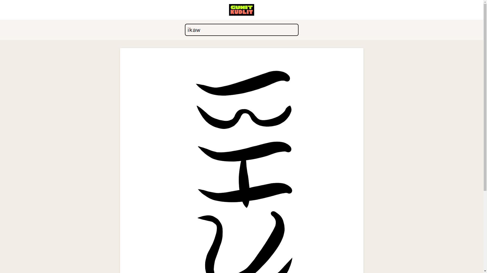
Baybayin calligraphy generator
GuhitKudlit is a webapp that generates baybayin calligraphy.
Baybayin is an ancient writing system used in the Philippines, mostly for the Tagalog language. I’ve always been fascinated by Philippine languages, and this project was just another fruit of that curiosity.
Project detailsOpen the app- released
- 2023
- role
- creator
- platform
- Web
- tech
- JS
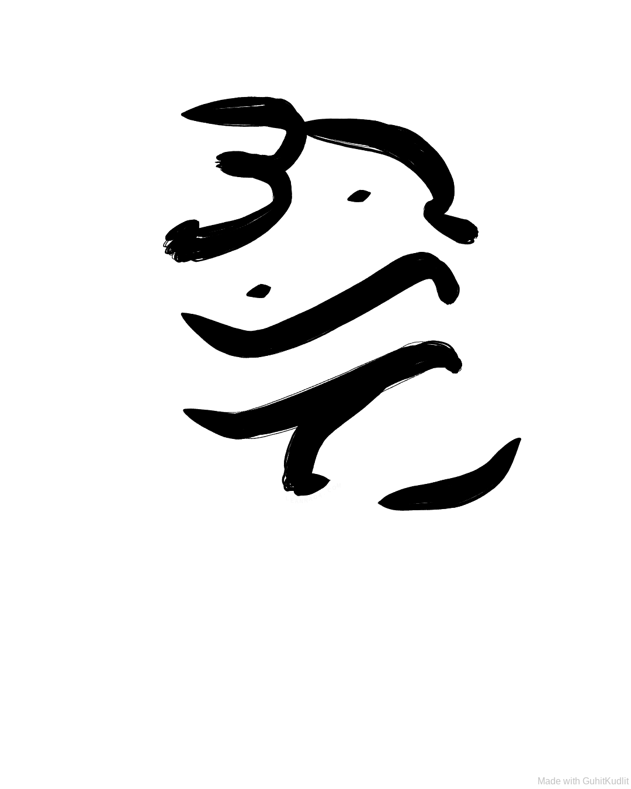Output of GuhitKudlit for the word ‘guhit’
The name comes from ‘guhit’ meaning line or drawing, and ‘kudlit’ meaning tick or small mark.
You see, baybayin is an abugida and in baybayin, the kudlit is used to signify the vowel of a character.
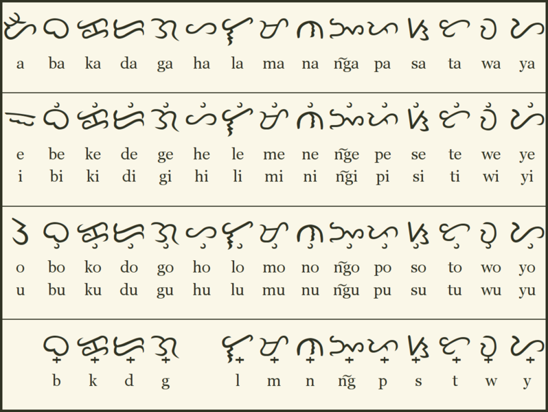Chart of baybayin characters from Wikimedia
The program is divided into two functions: transliteration and calligraphy. The transliteration process converts ASCII input to baybayin glyphs, and the calligraphy function draws those glyphs onto the canvas using the p5.js library.
Transliteration
The transliteration algorithm that converts ASCII text to baybayin glyphs is quite simple (or should I say, simplistic?). It processes the input letter-by-letter, and produces output one syllable at a time.
This works great for Tagalog words, not so much for English which has arbitrary rules on syllables & pronunciation. Thus, the converter was only intended to primarily work in Tagalog.
For example, Tagalog doesn’t have a letter for the “j” sound (Compare Japanese, which has no direct “L” sound). The transliteration function deliberately does not handle these cases to avoid misspellings and false assumptions. If you attempt to put in foreign letters, an error will stop you.
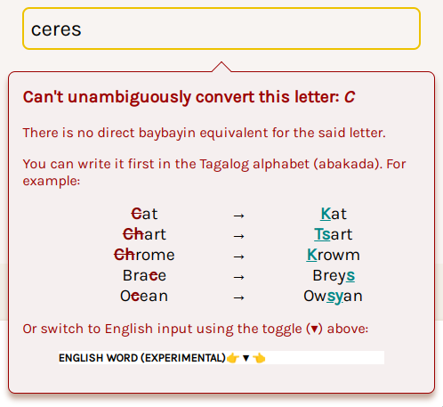
One thing I’ve noticed in other baybayin converters online was that their outputs were opaque. That is, if you can’t read baybayin, you can’t verify the output. This would sometimes trick people into getting silly mispelled tattoos and stuff. While that’s their fault for being ignorant, we can do better.
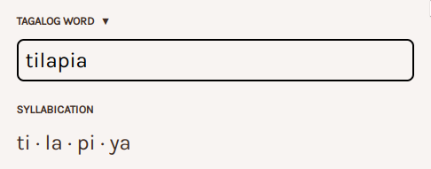
GuhitKudlit makes the transliteration process transparent by showing the resulting syllabication, which one-to-one maps to baybayin glyphs. This should allow users to double-check their results and make adjustments.
The module had a single-file test suite:
import { baybayin } from "./baybay.mjs";
// Karaniwan
dapat(baybayin("aso")).ay(["a", "su"]);
dapat(baybayin("pusa")).ay(["pu", "sa"]);
dapat(baybayin("araw")).ay(["a", "da", "w"]);
dapat(baybayin("elepante")).ay(["i", "li", "pa", "n", "ti"]);
dapat(baybayin("bantay")).ay(["ba", "n", "ta", "y"]);
dapat(baybayin("daan")).ay(["da", "a", "n"]);
dapat(baybayin("doon")).ay(["du", "u", "n"]);
dapat(baybayin("biik")).ay(["bi", "i", "k"]);
dapat(baybayin("kailan")).ay(["ka", "i", "la", "n"]);
dapat(baybayin("baon")).ay(["ba", "u", "n"]);
dapat(baybayin("baul")).ay(["ba", "u", "l"]);
dapat(baybayin("kain")).ay(["ka", "i", "n"]);
dapat(baybayin("upuan")).ay(["u", "pu", "a", "n"]);
// Di normal na baybay
dapat(baybayin("tilapia")).ay(["ti", "la", "pi", "ya"]);
dapat(baybayin("durian")).ay(["du", "di", "ya", "n"]);
// Bigkas na iba sa baybay
dapat(baybayin("ng")).ay(["na", "ng"]);
dapat(baybayin("mga")).ay(["ma", "nga"]);
// ...
(Yes, I wrote all the code for this project in Tagalog)
The transliteration process is just one half of the program. It took me a a while to code it, but what I really wanted to make was the drawing algorithm. While transliteration is essential for a good user experience, the real show starts with the calligraphy algorithm.
Calligraphy
Once we have a sequence of baybayin glyphs, we can start drawing them on the canvas.
The calligraphy algorithm goes like this (heavily simplified):
- A brush head is simulated in 2D space. It has position, size, velocity, pressure, and other properties.
- The brush is continuously pulled along the canvas following the strokes of the current glyph. This simulation mimics natural movement and momentum.
- When the current glyph is finished, the brush head moves down the next available space to start drawing the next glyph, and so on.
There are four preset calligraphy styles. These variations are created by changing the parameters of the brush simulation, like acceleration, pressure, etc.
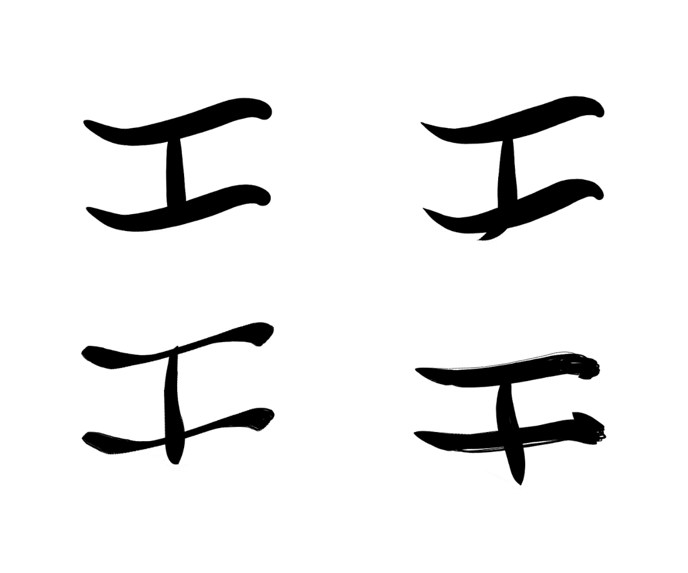Different styles starting from top-left, clockwise: Modern, Classic, Dry brush, Chisel tip
To define the vertices or waypoints that the brush head would follow, I started by decomposing baybayin into individual strokes and identified the common structural elements.
You know how Latin characters have something called “typography anatomy”? Things like ascenders, descenders, stems, bars, etc? These are elements common across Latin letters, like how the loop in ‘b’ is the same loop as in ‘p’, just with a different stem.
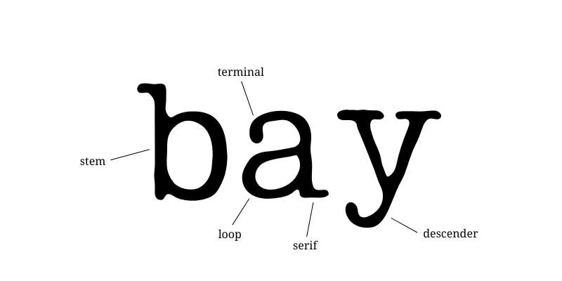
Well, I tried to decompose baybayin in a similar way. A big inspiration came from others who have done the same before, like Nordenx. However, for my specific purpose of constructing baybayin forms programmatically, my decomposition strategy is more about the reuse of common elements.
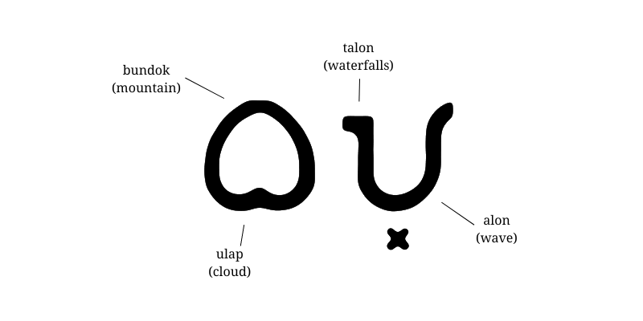
Here’s a partial list of the typographical building blocks that I ended up with:
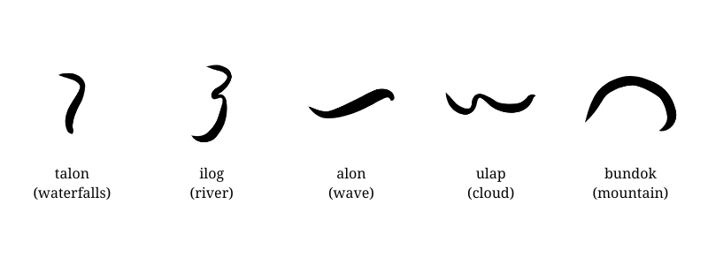
The decomposition is more apparent in code:
const talaguhitan = {
"a": [
...guhitYa,
[guhitTuwid, 0.0, 0.4, 0.2, 0.4, 0.05, -0.05, PUTOL],
],
"i": [
[guhitAlon, 0.0, 0.2, 1.0, 0.2, 0.0, 0.1, PUTOL],
[guhitUlap, 0.0, 0.5, 1.0, 0.5, 0.0, 0.2, PUTOL],
],
"u": [
[guhitIlog, 0.3, 0.0, 0.3, 1.0, 0.4, 0.0, PUTOL],
],
"b": [
[guhitBundok, 0.0, 0.8, 0.5, 0.2, 1.0, 0.7, 0.1, 0.1],
[guhitUlap, DUGTONG, DUGTONG, 0.05, 0.7, 0.0, 0.3, PUTOL],
],
// ...
In the above code, baybayin glyphs (represented by Latin character keys) are defined by an array of elements. The numbers next to each element are parameters that vary the position & form of the element.
Looking at ‘b’ (ᜊ), we can see that it’s composed of a guhitBundok connected (DUGTONG) to a guhitUlap below it. (“guhit” means stroke in this case)
"b": [
[guhitBundok, 0.0, 0.8, 0.5, 0.2, 1.0, 0.7, 0.1, 0.1],
[guhitUlap, DUGTONG, DUGTONG, 0.05, 0.7, 0.0, 0.3, PUTOL],
],
Sometimes a character can even reuse another character, like ‘a’ (ᜀ) which is just ‘ya’ (ᜌ) with an extra guhitTuwid (straight stroke).
"a": [
...guhitYa,
[guhitTuwid, 0.0, 0.4, 0.2, 0.4, 0.05, -0.05, PUTOL],
],
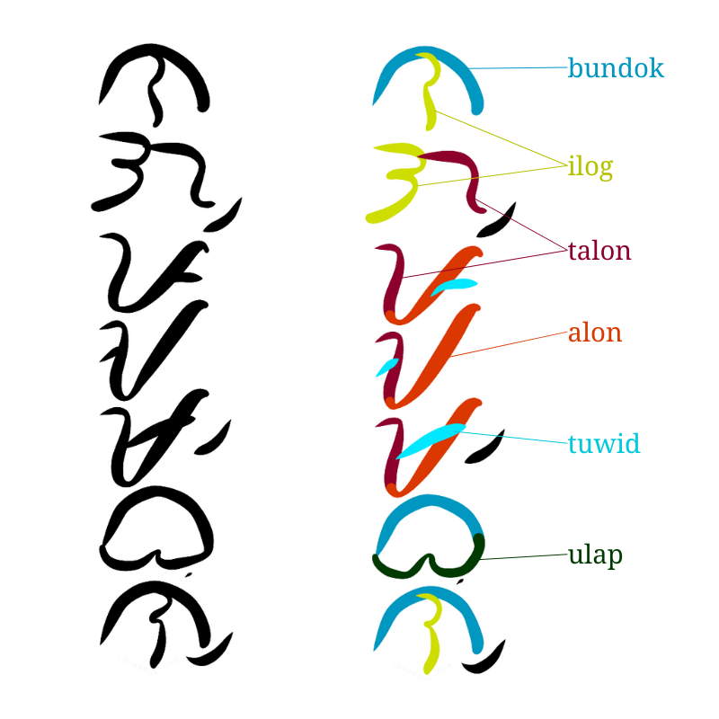Decomposition of baybayin in the word ᜈᜄ᜕ᜉᜀᜋ᜕ᜊᜓᜈ᜕ (‘nagpaambon’, ‘made something be rained on’)
You probably have inferred that these vertices are hardcoded, so the resulting calligraphy is not as dynamic as you might expect. One quick fix I added was to slightly warp them in certain directions with a bit of randomness, but it’s not great. This is something I could improve upon in a future iteration—e.g., make the brush movement purposeful, or arrange vertices with respect to other vertices across the whole word.
End note
This was a project that was hastily launched as a proof-of-concept. It was fun, but the codebase got quite spaghetti. The concept seems mildly successful, since it is now getting regular visitors (though, I have no idea what they actually do with it, I haven’t seen an output of this in the wild). Anyway, since this webapp looks useful, I intend to rewrite it with a better and more dynamic calligraphy algorithm. Maybe.
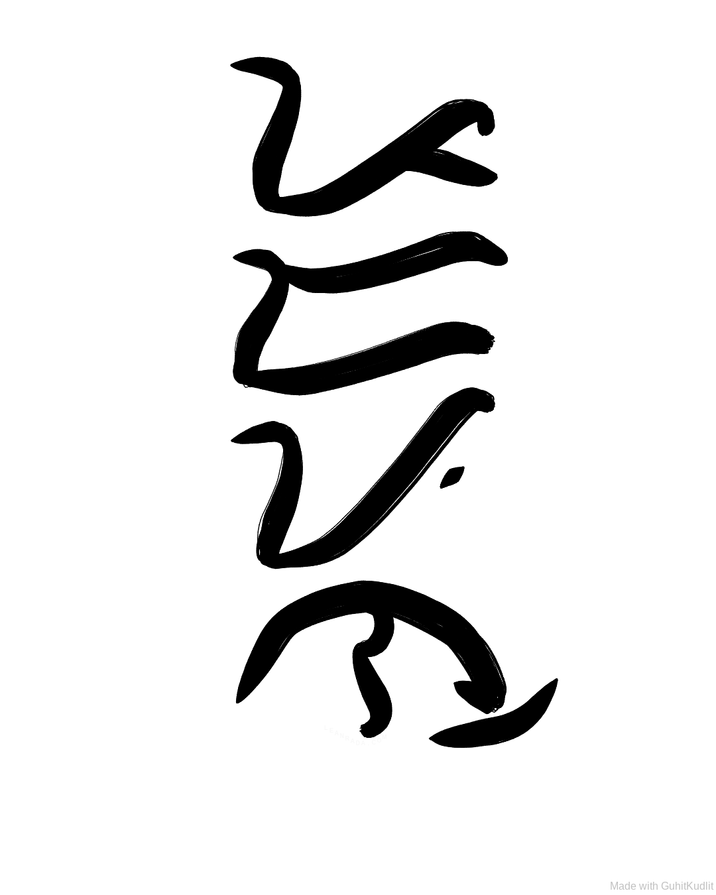This post wouldn’t be complete without writing the now-clichéd word ‘padayon’ in baybayin.